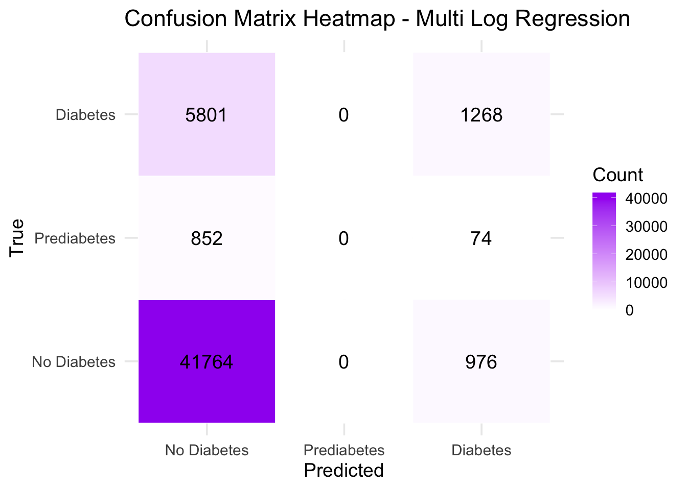
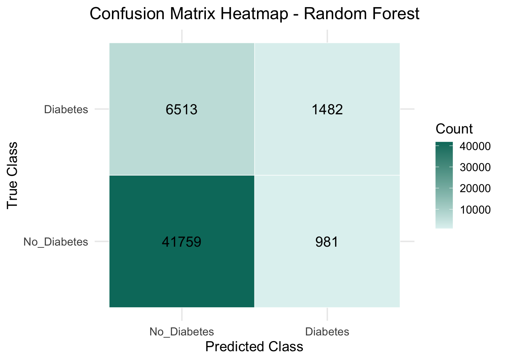
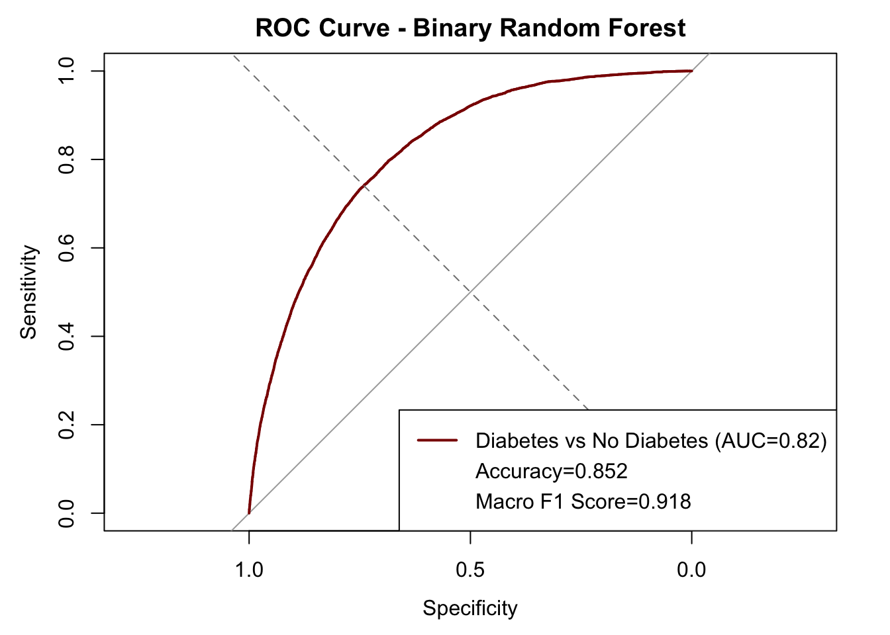
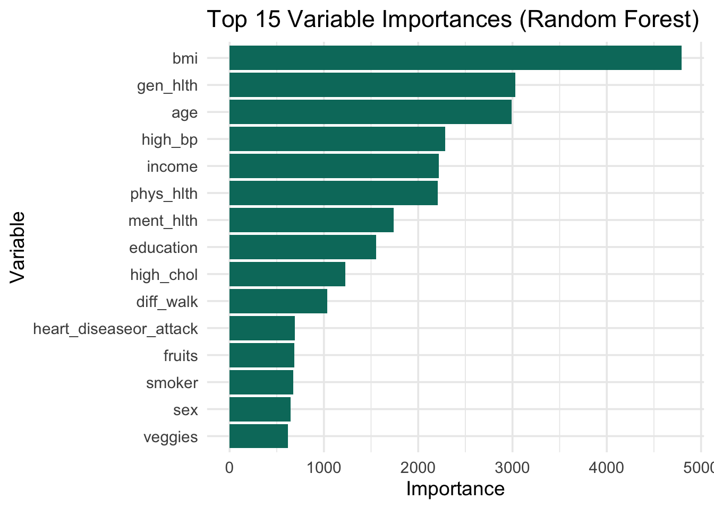
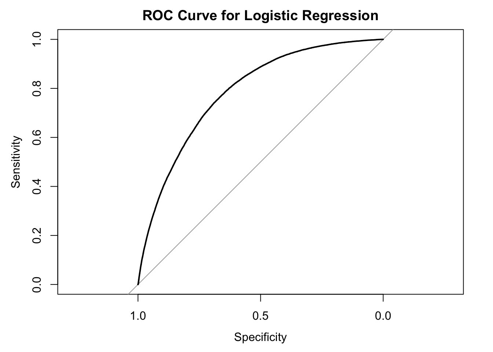
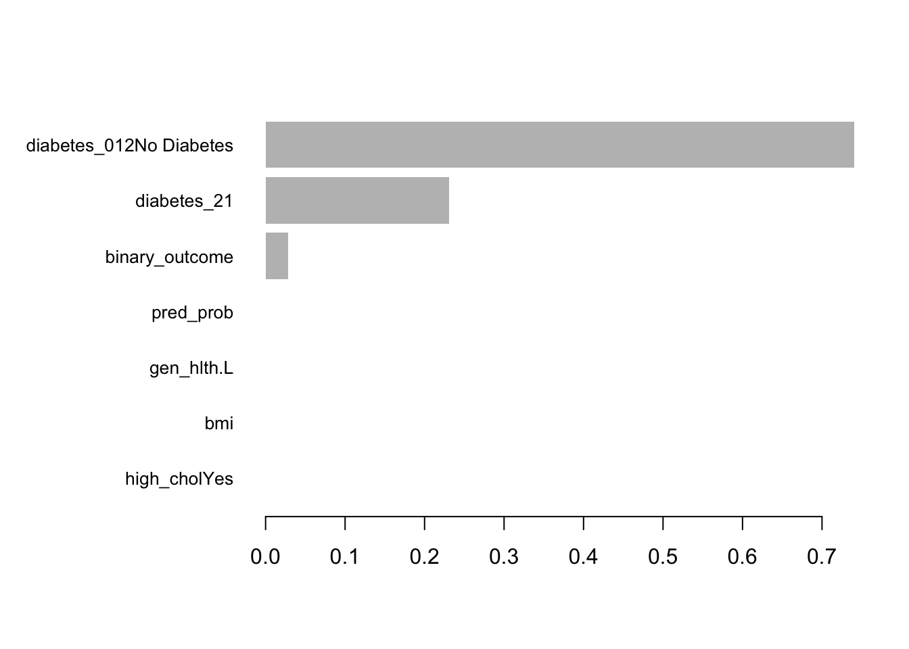

diabetes = readRDS("clean_diabetes_data.rds")df_multilog <- diabetes |>
select(diabetes_012, high_bp, high_chol, chol_check, bmi, smoker, stroke,
heart_diseaseor_attack, phys_activity, fruits, veggies, hvy_alcohol_consump,
any_healthcare, no_docbc_cost, gen_hlth, ment_hlth, phys_hlth, diff_walk,
sex, age, education, income)
df_multilog## # A tibble: 253,680 × 22
## diabetes_012 high_bp high_chol chol_check bmi smoker stroke
## <fct> <fct> <fct> <fct> <dbl> <fct> <fct>
## 1 No Diabetes Yes Yes Yes 40 Yes No
## 2 No Diabetes No No No 25 Yes No
## 3 No Diabetes Yes Yes Yes 28 No No
## 4 No Diabetes Yes No Yes 27 No No
## 5 No Diabetes Yes Yes Yes 24 No No
## 6 No Diabetes Yes Yes Yes 25 Yes No
## 7 No Diabetes Yes No Yes 30 Yes No
## 8 No Diabetes Yes Yes Yes 25 Yes No
## 9 Diabetes Yes Yes Yes 30 Yes No
## 10 No Diabetes No No Yes 24 No No
## # ℹ 253,670 more rows
## # ℹ 15 more variables: heart_diseaseor_attack <fct>, phys_activity <fct>,
## # fruits <fct>, veggies <fct>, hvy_alcohol_consump <fct>,
## # any_healthcare <fct>, no_docbc_cost <fct>, gen_hlth <ord>, ment_hlth <dbl>,
## # phys_hlth <dbl>, diff_walk <fct>, sex <fct>, age <ord>, education <ord>,
## # income <ord># using createDataPartition because diabetes_012 is unbalanced based on EDA.
train_test_split <- createDataPartition(df_multilog$diabetes_012, p = 0.8, list = FALSE)
train <- df_multilog[train_test_split, ]
test <- df_multilog[-train_test_split, ]
y_test <- test$diabetes_012multi_f1 <- function(true, pred) {
# Convert to factors
true <- as.factor(true)
pred <- as.factor(pred)
# make sure all classes are taken into consideration (bc diabetes=1 is rare)
class <- union(levels(true), levels(pred))
true <- factor(true, levels = class)
pred <- factor(pred, levels = class)
# A vector to store F1 for each class
multi_f1_vec <- numeric(length(class))
# Loop over each class
for (j in seq_along(class)) {
i <- class[j]
tp <- sum(true == i & pred == i)
fn <- sum(true == i & pred != i)
fp <- sum(true != i & pred == i)
rec <- if((tp + fn) == 0) 0 else tp / (tp + fn)
prec <- if((tp + fp) == 0) 0 else tp / (tp + fp)
if(prec + rec == 0) {
multi_f1_vec[j] <- 0
} else {
multi_f1_vec[j] <- 2 * prec * rec / (prec + rec)
}
}
mean(multi_f1_vec)
}model1 <- multinom(diabetes_012 ~ ., data = train, trace = FALSE)model1_pred <- predict(model1, newdata = test, type = "class")
model1_prob <- predict(model1, newdata = test, type = "prob")
model1_accuracy <- mean(model1_pred == y_test)
cat("Accuracy is:", model1_accuracy, "\n")## Accuracy is: 0.8481719model1_macro_f1 <- multi_f1(y_test, model1_pred)
cat("Macro F1 score is:", model1_macro_f1, "\n")## Macro F1 score is: 0.39549model1__macro_auc <- as.numeric(multiclass.roc(response = y_test, predictor = model1_prob)$auc)
cat("Macro AUC is:", model1__macro_auc, "\n")## Macro AUC is: 0.6955571cols <- c("blue", "green", "pink")
# Compute one-vs-rest ROC and AUC for each class
model1_roc1 <- roc(as.numeric(y_test == levels(y_test)[1]), model1_prob[, levels(y_test)[1]])## Setting levels: control = 0, case = 1## Setting direction: controls < casesmodel1_roc2 <- roc(as.numeric(y_test == levels(y_test)[2]), model1_prob[, levels(y_test)[2]])## Setting levels: control = 0, case = 1
## Setting direction: controls < casesmodel1_roc3 <- roc(as.numeric(y_test == levels(y_test)[3]), model1_prob[, levels(y_test)[3]])## Setting levels: control = 0, case = 1
## Setting direction: controls < cases# Plot ROC
plot(model1_roc1, col = cols[1], main = "ROC - Multinomial Logistic Regression")
lines(model1_roc2, col = cols[2])
lines(model1_roc3, col = cols[3])
# Compute class AUCs
model1_class_aucs <- sapply(levels(y_test), function(cl) round(auc(roc(as.numeric(y_test == cl), model1_prob[, cl])), 3))## Setting levels: control = 0, case = 1
## Setting direction: controls < cases## Setting levels: control = 0, case = 1## Setting direction: controls < cases## Setting levels: control = 0, case = 1## Setting direction: controls < cases# Add legend with class AUCs + macro AUC
legend("bottomright",
legend = c(paste0("Class ", levels(y_test), " (AUC=", model1_class_aucs, ")"),
paste0("Macro AUC=", round(model1__macro_auc, 3)),
paste0("Accuracy=", round(model1_accuracy, 3)),
paste0("Macro F1 Score=", round(model1_macro_f1, 3))),
col = c(cols, rep(NA, 3)),
lwd = c(rep(2, 3), rep(NA, 3)))model1_cm <- table(True = y_test, Pred = model1_pred)
model1_cm_df <- as.data.frame(model1_cm) |>
rename(True = True, Predicted = Pred, Count = Freq)
ggplot(model1_cm_df, aes(x = Predicted, y = True, fill = Count)) +
geom_tile(color = "white") +
geom_text(aes(label = Count), color = "black", size = 5) +
scale_fill_gradient(low = "white", high = "purple") +
labs(title = "Confusion Matrix Heatmap - Multi Log Regression", x = "Predicted", y = "True") +
theme_minimal(base_size = 14)
df_ranger <- diabetes |>
select(diabetes_2, high_bp, high_chol, chol_check, bmi, smoker, stroke,
heart_diseaseor_attack, phys_activity, fruits, veggies, hvy_alcohol_consump,
any_healthcare, no_docbc_cost, gen_hlth, ment_hlth, phys_hlth, diff_walk,
sex, age, education, income)
df_ranger$diabetes_2 <- factor(df_ranger$diabetes_2,
levels = c(0, 1),
labels = c("No_Diabetes", "Diabetes"))
df_ranger## # A tibble: 253,680 × 22
## diabetes_2 high_bp high_chol chol_check bmi smoker stroke
## <fct> <fct> <fct> <fct> <dbl> <fct> <fct>
## 1 No_Diabetes Yes Yes Yes 40 Yes No
## 2 No_Diabetes No No No 25 Yes No
## 3 No_Diabetes Yes Yes Yes 28 No No
## 4 No_Diabetes Yes No Yes 27 No No
## 5 No_Diabetes Yes Yes Yes 24 No No
## 6 No_Diabetes Yes Yes Yes 25 Yes No
## 7 No_Diabetes Yes No Yes 30 Yes No
## 8 No_Diabetes Yes Yes Yes 25 Yes No
## 9 Diabetes Yes Yes Yes 30 Yes No
## 10 No_Diabetes No No Yes 24 No No
## # ℹ 253,670 more rows
## # ℹ 15 more variables: heart_diseaseor_attack <fct>, phys_activity <fct>,
## # fruits <fct>, veggies <fct>, hvy_alcohol_consump <fct>,
## # any_healthcare <fct>, no_docbc_cost <fct>, gen_hlth <ord>, ment_hlth <dbl>,
## # phys_hlth <dbl>, diff_walk <fct>, sex <fct>, age <ord>, education <ord>,
## # income <ord>set.seed(1)
index <- createDataPartition(df_ranger$diabetes_2, p = 0.8, list = FALSE)
train_data <- df_ranger[index, ]
test_data <- df_ranger[-index, ]
y_test <- test_data$diabetes_2rf_model <- ranger(
dependent.variable.name = "diabetes_2",
data = train_data,
num.trees = 500,
importance = "impurity",
seed = 1,
verbose = TRUE,
probability = TRUE
)## Growing trees.. Progress: 46%. Estimated remaining time: 36 seconds.
## Growing trees.. Progress: 93%. Estimated remaining time: 4 seconds.pred <- predict(rf_model, data = test_data, type = "response")
# Probability of Diabetes (positive class)
model_prob <- pred$predictions[, "Diabetes"]
# Class predictions = class with highest probability
model_pred <- colnames(pred$predictions)[ max.col(pred$predictions) ]
model_pred <- factor(model_pred, levels = levels(y_test))
# Confusion matrix
cm <- confusionMatrix(model_pred, y_test)
# Accuracy
model_accuracy <- as.numeric(cm$overall['Accuracy'])
# F1 for Diabetes
f1_diabetes <- as.numeric(cm$byClass['F1'])
# F1 for No_Diabetes
cm_rev <- confusionMatrix(model_pred, y_test, positive = "No_Diabetes")
f1_no_diabetes <- as.numeric(cm_rev$byClass['F1'])
# Macro F1
model_macro_f1 <- mean(c(f1_diabetes, f1_no_diabetes))
# AUC for Diabetes
model_roc <- roc(response = y_test, predictor = model_prob)## Setting levels: control = No_Diabetes, case = Diabetes## Setting direction: controls < casesmodel_auc <- as.numeric(model_roc$auc)
cat("Accuracy is: ", round(model_accuracy, 4), "\n")## Accuracy is: 0.8523cat("Macro F1 score is:", round(model_macro_f1, 4), "\n")## Macro F1 score is: 0.9177cat("ROC AUC (Binary) is:", round(model_auc, 4), "\n")## ROC AUC (Binary) is: 0.8195model_cm_table <- cm$table
model_cm_df <- as.data.frame(model_cm_table) |>
rename(True = Reference, Predicted = Prediction, Count = Freq)
p_heatmap <- ggplot(model_cm_df, aes(x = Predicted, y = True, fill = Count)) +
geom_tile(color = "white") +
geom_text(aes(label = Count), color = "black", size = 5) +
scale_fill_gradient(low = "#e0f2f1", high = "#00796b") +
labs(
title = "Confusion Matrix Heatmap - Random Forest",
x = "Predicted Class",
y = "True Class"
) +
theme_minimal(base_size = 14) +
theme(plot.title = element_text(hjust = 0.5))
print(p_heatmap)
plot(model_roc,
col = "darkred",
main = "ROC Curve - Binary Random Forest",
lwd = 2)
abline(a = 0, b = 1, lty = 2, col = "grey50")
legend(
"bottomright",
legend = c(
paste0("Diabetes vs No Diabetes (AUC=", round(model_auc, 3), ")"),
paste0("Accuracy=", round(model_accuracy, 3)),
paste0("Macro F1 Score=", round(model_macro_f1, 3))
),
col = c("darkred", rep(NA, 2)),
lwd = c(2, rep(NA, 2))
)
importance_df <- data.frame(
Variable = names(rf_model$variable.importance),
Importance = rf_model$variable.importance
) |>
arrange(desc(Importance))
ggplot(importance_df[1:15, ], aes(x = reorder(Variable, Importance), y = Importance)) +
geom_col(fill = "#00796b") +
coord_flip() +
labs(title = "Top 15 Variable Importances (Random Forest)",
x = "Variable",
y = "Importance") +
theme_minimal(base_size = 14)
diabetes_temp = diabetes %>%
mutate(
diabetes_binary = ifelse(diabetes_012 == "No Diabetes", 0, 1),
diabetes_binary = as.numeric(diabetes_binary)
)We fit a logistic regression model using health and lifestyle predictors such as blood pressure, cholesterol, BMI, smoking status, physical activity, age, and sex.
logit_model = glm(
diabetes_binary ~ high_bp + high_chol + bmi + smoker + phys_activity + age + sex,
data = diabetes_temp,
family = binomial(link = "logit")
)
summary(logit_model)##
## Call:
## glm(formula = diabetes_binary ~ high_bp + high_chol + bmi + smoker +
## phys_activity + age + sex, family = binomial(link = "logit"),
## data = diabetes_temp)
##
## Coefficients:
## Estimate Std. Error z value Pr(>|z|)
## (Intercept) -4.9335132 0.0337506 -146.175 < 2e-16 ***
## high_bpYes 0.9334468 0.0133878 69.724 < 2e-16 ***
## high_cholYes 0.6788247 0.0125063 54.279 < 2e-16 ***
## bmi 0.0723489 0.0008718 82.984 < 2e-16 ***
## smokerYes 0.1132249 0.0119856 9.447 < 2e-16 ***
## phys_activityYes -0.3568117 0.0128025 -27.870 < 2e-16 ***
## age.L 2.4501416 0.0602296 40.680 < 2e-16 ***
## age.Q -0.5788621 0.0574324 -10.079 < 2e-16 ***
## age.C -0.1757155 0.0538836 -3.261 0.00111 **
## age^4 0.0511402 0.0511210 1.000 0.31713
## age^5 -0.1167826 0.0483849 -2.414 0.01580 *
## age^6 0.0237069 0.0449595 0.527 0.59799
## age^7 0.0624394 0.0414595 1.506 0.13206
## age^8 -0.0433950 0.0375788 -1.155 0.24818
## age^9 0.0397879 0.0332257 1.198 0.23111
## age^10 -0.0698033 0.0289679 -2.410 0.01597 *
## age^11 0.0642426 0.0254442 2.525 0.01158 *
## age^12 0.0188388 0.0217445 0.866 0.38629
## sexMale 0.1436624 0.0119704 12.001 < 2e-16 ***
## ---
## Signif. codes: 0 '***' 0.001 '**' 0.01 '*' 0.05 '.' 0.1 ' ' 1
##
## (Dispersion parameter for binomial family taken to be 1)
##
## Null deviance: 221031 on 253679 degrees of freedom
## Residual deviance: 185540 on 253661 degrees of freedom
## AIC: 185578
##
## Number of Fisher Scoring iterations: 6exp(cbind(
OR = coef(logit_model),
confint.default(logit_model)
))## OR 2.5 % 97.5 %
## (Intercept) 0.007201159 0.006740217 0.007693625
## high_bpYes 2.543260320 2.477394210 2.610877603
## high_cholYes 1.971559144 1.923819868 2.020483062
## bmi 1.075030367 1.073194950 1.076868923
## smokerYes 1.119883711 1.093882640 1.146502816
## phys_activityYes 0.699904251 0.682560422 0.717688787
## age.L 11.589987419 10.299483382 13.042188952
## age.Q 0.560535820 0.500860543 0.627321138
## age.C 0.838856596 0.754782668 0.932295373
## age^4 1.052470431 0.952128709 1.163386837
## age^5 0.889778609 0.809276024 0.978289173
## age^6 1.023990135 0.937618435 1.118318237
## age^7 1.064429908 0.981356280 1.154535872
## age^8 0.957533083 0.889542471 1.030720438
## age^9 1.040590090 0.974984879 1.110609773
## age^10 0.932577285 0.881104300 0.987057255
## age^11 1.066351021 1.014476588 1.120878012
## age^12 1.019017415 0.976500927 1.063385056
## sexMale 1.154494301 1.127723237 1.181900884# Predicted probability
diabetes_temp$pred_prob <- predict(logit_model, type = "response")
# Convert to class prediction at threshold = 0.5
diabetes_temp$pred_class <- ifelse(diabetes_temp$pred_prob > 0.5, 1, 0)
# Confusion matrix
table(
Actual = diabetes_temp$diabetes_binary,
Predicted = diabetes_temp$pred_class
)## Predicted
## Actual 0 1
## 0 210761 2942
## 1 36471 3506library(pROC)
roc_obj <- roc(diabetes_temp$diabetes_binary, diabetes_temp$pred_prob)## Setting levels: control = 0, case = 1## Setting direction: controls < casesauc(roc_obj)## Area under the curve: 0.7845plot(roc_obj, main = "ROC Curve for Logistic Regression")
We trained an XGBoost model using a 70/30 train-test split. Predictors were converted to numeric matrices using model.matrix.
library(xgboost)
library(caret)
library(dplyr)
#Train/Test Split
set.seed(123)
train_index = createDataPartition(diabetes_temp$diabetes_binary, p = 0.7, list = FALSE)
train=diabetes_temp[train_index, ]
test=diabetes_temp[-train_index, ]
train$binary_outcome=as.numeric(train$diabetes_binary)
test$binary_outcome=as.numeric(test$diabetes_binary)
x_train <- model.matrix(diabetes_binary ~ . - 1, data = train)
x_test <- model.matrix(diabetes_binary ~ . - 1, data = test)
dtrain=xgb.DMatrix(data = as.matrix(x_train), label = train$diabetes_binary)
dtest=xgb.DMatrix(data = as.matrix(x_test), label = test$diabetes_binary)# Set Hyperparameters
params = list(
objective = "binary:logistic",
eval_metric = "auc",
max_depth = 4,
eta = 0.1,
subsample = 0.8,
colsample_bytree = 0.8
)# Train Model
xgb_model = xgb.train(
params = params,
data = dtrain,
nrounds = 200,
watchlist = list(train = dtrain, test = dtest),
verbose = 0
)pred_prob <- predict(xgb_model, dtest)
pred_class <- ifelse(pred_prob >= 0.5, 1, 0)
confusionMatrix(
factor(pred_class),
factor(test$diabetes_binary),
positive = "1"
)## Confusion Matrix and Statistics
##
## Reference
## Prediction 0 1
## 0 64016 0
## 1 0 12088
##
## Accuracy : 1
## 95% CI : (1, 1)
## No Information Rate : 0.8412
## P-Value [Acc > NIR] : < 2.2e-16
##
## Kappa : 1
##
## Mcnemar's Test P-Value : NA
##
## Sensitivity : 1.0000
## Specificity : 1.0000
## Pos Pred Value : 1.0000
## Neg Pred Value : 1.0000
## Prevalence : 0.1588
## Detection Rate : 0.1588
## Detection Prevalence : 0.1588
## Balanced Accuracy : 1.0000
##
## 'Positive' Class : 1
## xgb_auc = roc(test$diabetes_binary, pred_prob)## Setting levels: control = 0, case = 1## Setting direction: controls < casesauc(xgb_auc)## Area under the curve: 1importance_matrix <- xgb.importance(model = xgb_model)
xgb.plot.importance(importance_matrix)